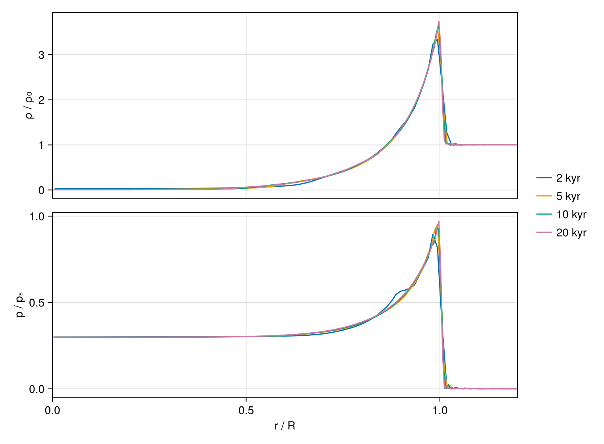
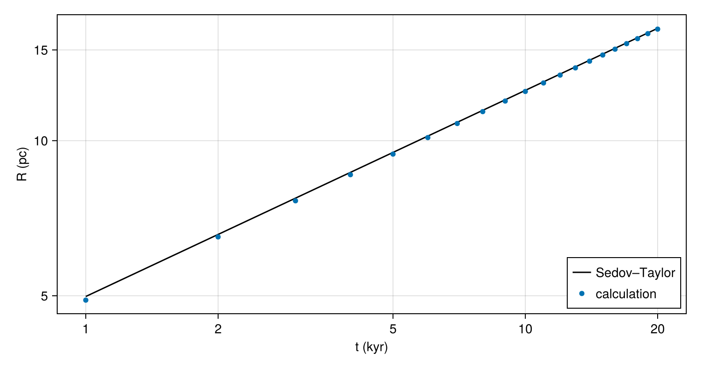

Supernova remnant
A supernova releases about $10^{51}$ erg into the interstellar gas, and the ejected stellar material drives a strong shock outward. Once the shock has swept up much more gas than the explosion ejected, the mass of the ejecta no longer affects the flow, and until radiative cooling sets in, the remnant depends only on the energy $E$ of the explosion and the density $\rho_0$ of the gas around it. The only length that $E$, $\rho_0$ and the time $t$ since the explosion can form is $(E t^2/\rho_0)^{1/5}$, so the radius of the shock grows as
\[R = \xi_0 \left(\frac{E t^2}{\rho_0}\right)^{1/5}.\]
Taylor, von Neumann and Sedov derived the self-similar flow behind such a blast wave in the 1940s. The constant $\xi_0$ follows from the requirement that the flow carry the energy $E$; for a gas with a heat capacity ratio $\gamma = 5/3$, as for the ionized hydrogen and helium of interstellar gas, integrating Sedov's solution gives $\xi_0 = 1.1517$. Read the other way, the relation gives the energy of an explosion from the radius of its remnant at a known age.
This tutorial deposits $10^{51}$ erg in gas of one hydrogen nucleus per cubic centimeter, follows the remnant for 20 000 years, and compares its radius with the Sedov–Taylor law and the energy inferred from that radius with the energy deposited.
using CompactLES # re-exports MPI
MPI.Initialized() || MPI.Init(threadlevel=:funneled)
using CairoMakie
using Printf
CairoMakie.activate!(type = "png")Units
In grams, centimeters and seconds the energy of the explosion is $10^{51}$ and the ambient density $2 \times 10^{-24}$. The calculation instead measures length in parsecs, time in thousands of years (kyr) and mass in solar masses, the units in which the remnant is usually described. The solver has no units of its own: every input is a number in whatever consistent system the problem is written in.
M_sun = 1.989e33 # solar mass, g
pc = 3.086e18 # parsec, cm
kyr = 3.156e10 # thousand years, s
m_H = 1.674e-24 # hydrogen atom, g
k_B = 1.381e-16 # Boltzmann constant, erg/KThe unit of energy is $M_\odot\,\mathrm{pc}^2/\mathrm{kyr}^2$, about $1.9 \times 10^{49}$ erg, so the explosion carries 53 units of energy. The unit of velocity, a parsec per thousand years, is 978 km/s.
Interstellar gas contains about one helium atom for every ten hydrogen atoms, so each hydrogen nucleus comes with a mass of $1.4\,m_H$, and a density of one hydrogen nucleus per cubic centimeter is $1.4\,m_H$ g/cm³. Fully ionized, as it is behind the shock, the gas has 2.3 particles for each hydrogen nucleus: the proton, a tenth of a helium nucleus, and 1.2 electrons. The mean mass per particle is then $\mu = 1.4/2.3 = 0.61$ hydrogen masses, and the specific gas constant $k_B/(\mu m_H)$, converted to $\mathrm{pc}^2\,\mathrm{kyr}^{-2}\,\mathrm{K}^{-1}$, makes the temperature of the calculation a temperature in kelvin.
energy_unit = M_sun * pc^2 / kyr^2 # erg
velocity_unit = pc / kyr / 1e5 # km/s
E = 1e51 / energy_unit
rho0 = 1.4 * m_H * pc^3 / M_sun
R_gas = k_B / (1.4 / 2.3 * m_H) * kyr^2 / pc^2
@printf("E = %.2f M_sun pc²/kyr², ρ₀ = %.4f M_sun/pc³, R = %.3e pc²/(kyr² K)\n",
E, rho0, R_gas)E = 52.58 M_sun pc²/kyr², ρ₀ = 0.0346 M_sun/pc³, R = 1.417e-08 pc²/(kyr² K)The Sedov–Taylor radius in these units:
gamma = 5 / 3
xi0 = 1.1517
sedov_radius(t) = xi0 * (E * t^2 / rho0)^(1 / 5)
@printf("R(20 kyr) = %.2f pc\n", sedov_radius(20.0))R(20 kyr) = 16.52 pcSphere
SphericalMetric reads the three coordinates as $(r, \theta, \phi)$ and the velocity components as $(u_r, u_\theta, u_\phi)$. The remnant is spherically symmetric, so the calculation resolves only the radius: a dimension given one point and a periodic pair of boundary conditions is collapsed, and the solver takes no derivatives along it. The geometry remains in the radial terms: a flux through concentric spheres has the divergence $r^{-2}\,\partial(r^2 F_r)/\partial r$, since the area of a sphere grows as $r^2$. A collapsed $\theta$ sits at the low end of its range, here the equator $\theta = \pi/2$; setup rejects a node on a pole, where $\sin\theta = 0$. The widths of the two collapsed ranges, one radian each, do not enter the calculation.
The origin $r = 0$ is not a wall: the flow continues through it to the other side of the sphere. OriginBC supplies that continuation. The density and pressure at $-r$ equal those at $r$, and the radial velocity changes sign, since the radial direction reverses through the origin. The radial nodes lie at $r_i = (i - \tfrac12)\Delta r$, so none sits at the origin itself. The shock does not reach the outer boundary, a SlipWallBC at 20 pc.
Explosion
The energy is deposited as heat in gas at rest, in a pressure excess $p_\mathrm{in}\,e^{-r^2/\sigma^2}$ that holds the energy $\pi^{3/2} p_\mathrm{in}\sigma^3/(\gamma - 1)$. Its width, $\sigma = 1$ pc, is small compared with the radius of the remnant at the first record, 5 pc at 1 kyr, and spans 13 node spacings; halving it changes the energy inferred below by less than 0.1%. The ambient gas is at $10^4$ K; its pressure is under 0.2% of the pressure behind the shock at 20 kyr.
T0 = 1e4
p0 = rho0 * R_gas * T0
sigma = 1.0
p_in = E * (gamma - 1) / (pi^1.5 * sigma^3)
problem = Problem(
name = "supernova remnant",
eos = IdealSpecies("ism"; gamma = gamma, R = R_gas),
metric = SphericalMetric(),
domain = ((0.0, 20.0), (pi / 2, pi / 2 + 1), (0.0, 1.0)),
bcs = ((OriginBC(), SlipWallBC()), PeriodicBC(), PeriodicBC()),
ic = (r, theta, phi) -> Prim(rho = rho0, p = p0 + p_in * exp(-(r / sigma)^2)),
)Run
The shock slows as it grows, at $U = dR/dt = 2R/5t$, but at 20 kyr it is still strong:
U = 2 / 5 * sedov_radius(20.0) / 20.0
c0 = sqrt(gamma * R_gas * T0)
@printf("shock speed at 20 kyr %.0f km/s, Mach %.0f\n", U * velocity_unit, U / c0)shock speed at 20 kyr 323 km/s, Mach 21Ahead of the captured shock the pressure of the cold ambient gas oscillates, and at a few nodes it falls below zero. The ideal gas has no state at a negative pressure, and run! rejects such a state by default. StepControl with validity = :permissive accepts it and warns instead; state_report, printed after the run, counts the points outside the model's domain. The numerics are otherwise the defaults, on 256 radial nodes. A callback records the density and pressure profiles every thousand years.
solver, Q = setup(problem, Numerics(n_global = (256, 1, 1),
control = StepControl(validity = :permissive)))
profiles = []
record = Callback(AtTime(collect(1.0:1.0:20.0)), function (solver, Q)
r, rho = line_profile(solver, Q, :rho)
_, p = line_profile(solver, Q, :p)
push!(profiles, (; t = solver.t, r, rho, p))
nothing
end)
run!(solver, Q; tfinal = 20.0, nmax = 20_000, callback = record)
@printf("%d steps to t = %.1f kyr\n", solver.step, solver.t)
println(state_report(solver, Q))2009 steps to t = 20.0 kyr
StateReport(256 points, 3 inadmissible; rho_min = 0.00016498627900535313, e_min = -0.003175377077011761)Remnant
A self-similar flow keeps its shape as it grows. Plotted against $r/R$, with $R$ the Sedov–Taylor radius at each age, and with the pressure divided by $p_s = \tfrac{3}{4}\rho_0 U^2$, the pressure a strong shock moving at $U$ leaves behind it when $\gamma = 5/3$, the profiles at four ages should fall on one curve:
fig = Figure(size = (760, 560))
ax1 = Axis(fig[1, 1], ylabel = "ρ / ρ₀")
ax2 = Axis(fig[2, 1], ylabel = "p / pₛ", xlabel = "r / R")
for (t, color) in zip((2, 5, 10, 20), Makie.wong_colors())
prof = profiles[t]
R = sedov_radius(t)
p_s = 3 / 4 * rho0 * (2 / 5 * R / t)^2
lines!(ax1, prof.r ./ R, prof.rho ./ rho0, color = color, label = "$t kyr")
lines!(ax2, prof.r ./ R, prof.p ./ p_s, color = color)
end
hidexdecorations!(ax1, grid = false)
linkxaxes!(ax1, ax2)
xlims!(ax2, 0, 1.2)
Legend(fig[1:2, 2], ax1, framevisible = false)
fig
The swept-up gas gathers in a thin shell behind the shock, and the interior is left rarefied, at nearly uniform pressure. A strong shock in a gas with $\gamma = 5/3$ compresses the gas fourfold, and behind the shock the density falls steeply. The captured shock spreads over a few nodes, across which the density has already begun to fall, so the peak lies below 4, and lower at early times, when those nodes are a larger fraction of the radius. At 20 kyr the peak is 3.7 on 256 nodes, 3.8 on 512 and 3.9 on 1024.
At 2 kyr the pressure near $r/R = 0.9$ departs from the later profiles by up to 5% of $p_s$. The departure halves when the width of the deposit is halved and does not shrink on 512 nodes: it is left by the finite width of the deposit, and it has fallen below 2% by 5 kyr.
Radius
The shock radius is read from the density peak. Taking the node of the peak would move the radius in steps of one spacing, $\Delta r = 0.078$ pc, and since the energy goes as the fifth power of the radius, one step changes the energy inferred at 20 kyr by 2.4%. The radius is instead the vertex of the parabola through the peak and its two neighbors:
dr = 20.0 / 256
function shock_radius(prof)
i = argmax(prof.rho)
a, b, c = prof.rho[i-1], prof.rho[i], prof.rho[i+1]
return prof.r[i] + dr * (a - c) / (2 * (a - 2b + c))
end
times = [prof.t for prof in profiles]
radii = shock_radius.(profiles)
fig = Figure(size = (760, 400))
ax = Axis(fig[1, 1], xlabel = "t (kyr)", ylabel = "R (pc)", xscale = log10,
yscale = log10, xticks = [1, 2, 5, 10, 20], yticks = [5, 10, 15, 20])
ts = range(1, 20; length = 100)
lines!(ax, ts, sedov_radius.(ts), color = :black, label = "Sedov–Taylor")
scatter!(ax, times, radii, markersize = 8, label = "calculation")
axislegend(ax, position = :rb)
fig
The exponent of the growth, fitted by least squares to $\ln R$ against $\ln t$ from 5 kyr on, after the departure left by the deposit has faded, and the energy inferred from the radius, $E = \rho_0 (R/\xi_0)^5/t^2$:
fit = times .>= 5
x, y = log.(times[fit]), log.(radii[fit])
xm, ym = sum(x) / length(x), sum(y) / length(y)
@printf("exponent %.4f against 2/5\n", sum((x .- xm) .* (y .- ym)) / sum((x .- xm) .^ 2))
println(" t (kyr) R (pc) Sedov–Taylor shortfall / Δr E (10⁵¹ erg)")
for t in (5, 10, 20)
R = radii[t]
@printf("%6.0f %9.3f %11.3f %13.2f %15.3f\n", t, R, sedov_radius(t),
(sedov_radius(t) - R) / dr, rho0 * (R / xi0)^5 / t^2 * energy_unit / 1e51)
endexponent 0.4027 against 2/5
t (kyr) R (pc) Sedov–Taylor shortfall / Δr E (10⁵¹ erg)
5 9.417 9.489 0.92 0.963
10 12.460 12.520 0.78 0.976
20 16.461 16.521 0.76 0.982The radius grows as $t^{2/5}$, and at 20 kyr the energy inferred from it is 1.8% below the energy deposited. The measured radius falls short of the Sedov–Taylor radius by a nearly constant distance, under one node spacing: the density peak of the captured shock lies that far behind the front. The shortfall is a smaller fraction of a larger radius, so the inferred energy approaches the deposited energy as the remnant grows, and the fitted exponent lies slightly above 2/5. The shortfall falls as the grid is refined: at 20 kyr the inferred energy is 4% low on 128 nodes, 0.7% low on 512 and 0.3% low on 1024, where the exponent is 0.4006. The total energy on the grid changes by less than 0.1% over the run.
What this checks
- A spherical calculation, resolved in radius alone and continued through the origin, reproduces the Sedov–Taylor growth $R \propto t^{2/5}$, and its density and pressure profiles collapse onto one curve in the Sedov–Taylor scaling.
- The energy inferred from the radius at 20 kyr is 1.8% below the energy deposited, and the difference falls as the grid is refined.
This page was generated using Literate.jl.